BuilderX v.3.2.4 > Documentation
Core fetures
In the Content(pic.1) mode you can edit text, add and / or change the image and video.

Pic.1
Click on the text to start editing. For additional parameters highlight the desired text fragment and select from the popup menu (pic.2).
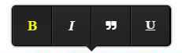Pic.2
To change the content of the image, click on the icon to edit the image (pic.3.) In the dialog box, enter the URL of the image placed in the web (pic.4) or conditional address of the image located on a local disk in the project folder

Pic.3
You can also select one of the preset images, select Images tab Click on the image (pic.5), to select it and press Save changes
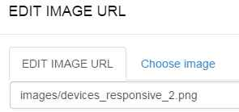Pic.4

Pic.5
To change the video click on the button Change video (Pic.6)
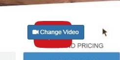Pic.6
in the dialog box, insert a link to a video on youtube.com or vimeo.com(Pic.7)
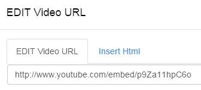Pic.7
You can also add a video by importing html code to do this, go to the second tab in the pop-up window (Pic.8)

Pic.8
NOTE! In the Styles mode all changes will be apply directly in inline code of an elements. If you are hard-coder you can write your own CSS styles in the code editor or modify LESS files as will be described below
In Styles mode you can edit some styles of selected items without having to write CSS code . For switching in to Styles mode click styles icon on the left menu bar.
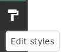Pic.1
Now when you hover over any element, you will see the selection of this item, click on the item to open the Edit window styles. (Pic.2) style editing window is divided into three tabs. The first tab is responsible for setting box-model elements, borders, padding, and the thickness of the frame in pixels. Enter the desired value in pixels and the new value will be automatically applied to the selected element.
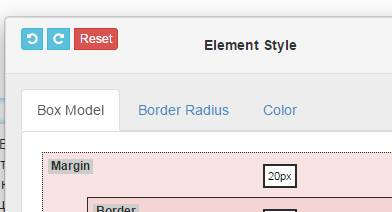Pic.2
In the border-radius tab , you can adjust the radius of an elements borders (corner rounding) (Pic.3). To change the value, use the slider or enter a numeric value in the form window, you can also select the unit of measurement - Percentage (%) or pixels (px), for this click on the appropriate button. Default settings are set for all angles of entry to disable all of the angles for editing, click on one of the BuilderX of green rectangle, which is located in the same tab.

Pic.3
Background tab is responsible for setting the color of text elements, transparency, and background (Pic.4) To adjust the colors and background, select the desired color from the palette or enter a numeric value to RGB. To adjust the transparency of the element, drag the slider or enter a numeric value in the form window (%)
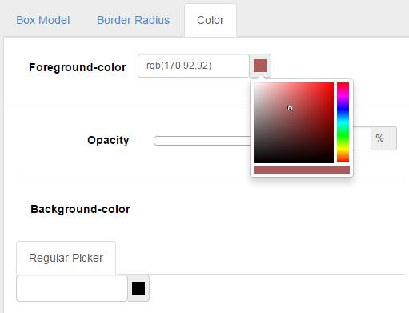Pic.4
Drag-and-drop coloring tool
After clicking on any component and activate the Styles mode window , you can also see at the bottom of the canvas the material design palette with colors droplets (Pic.5). This tool is insiring by http://tympanus.net/codrops/ Thanks Codrops for such a great tool. You can drag a color from the color palette and drop it on any area that lights up with a blue outline, including text elements. Once the droplet that you are dragging gets dropped on a content area, a fun little Google Material like animation happens and the whole area gets filled with a colored circle. For that effect we use an SVG element that we create on the fly and then scale it up and fade it in with a CSS transition. You can reset the whole thing by clicking on the droplet icon in the palette toolbar. You can change the color of any section and most of the components. However, this feature is still in beta, and we recommend to use it with caution. Sometimes, not all the components react to a change of color in full.

Pic.5
In the HTML x-ray mode, you can easily work with any element html code (Pic.1). you can edit html code of selected items in code editor.
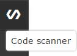Pic.1
Place your mouse over any item to select it (Pic.2), hereinafter click on the selected item to open the html code in editor (Pic.3)
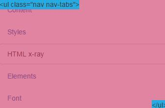Pic.2
In the code editor, you can edit the html code of any item or group of items. You can also use the tools Zen-coding (Emmet) integrated in the code editor for writing code faster. See examples of using Emmet going to this link >> To activate a function in the code editor, type part of the code, for example div.container and press Tab + Space on the keyboard to see the transformation. We also have built in code editor autocompletion, including class-based elements of the framework Bootstrap. To use the auto-completion you can type in the editor, for example bs and click on the keyboard Ctrl+Space (Pic.4)
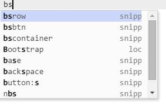
Pic.4
Attention! Elements mode works in Beta mode, which means that some features may not work properly if you find any bugs, please let us know! Thanks!
In the Elements mode, you can add new elements of the Bootstrap framework version 3 *
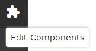Pic.1
Place your cursor on any column to activate the button Add Item (Add element)(Pic.2)

Pic.2
In the opened window, you will find items available for adding to the project. Next, click on the selected item to select it and then click on the button at the bottom Save changes (Pic.3) to add an item to the project document
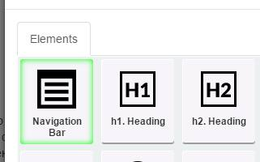
Pic.3
After adding the element to the project document, you can change its location by dragging element a desired position (Pic.4) To do this, move the cursor to selected element, press and hold down the mouse button, drag the item. You can also use drag and drop in this mode for all elements of the project. NOTE! An elements moving with drag-and-drop and added only to the Bootstrap columns (col-*-*) div's

Pic.4
Attention! Font mode include several sub-modes of editing font properties for devices with different screens sizes .
Pic.1
In the Font mode (pic.1), you can edit the of the project font styles - select font styles from Google fonts library, font size, inter-line spacing, inter-letter spacing. (Pic.2)

Pic.2
You can apply different font settings for the various elements of the header (h1-h5), paragraphs (p) or the whole document (body) (Pic.3.)

Pic.3
You can change the font settings for a variety of devices with different screen resolutions. For example, you can set a larger font size for desktop computers and smaller for mobile devices. (Pic.4) to select the various screen sizes, press on the relevant device button and changed font settings will be applyed for the device size.
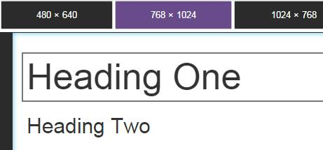
Pic.4
Preview mode

In Preview mode, you can set the view of your template for different devices. To do this, select the device size by clicking on the buttons at the top of the panel. To return to the editing mode, press back button (button with left direction arrow icon)

Save/Open files
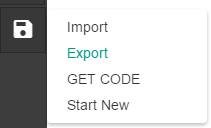You can save your completed document as a html page is fully ready for uploading to hosting with GET CODE function. You can save your page in a special format using the Export function and thereafter to open it for editing with the Import function
Caution Saving function may not work properly or not work in some browsers or/and on Mac computers. And after pressing the save can be opened as a code in a new browser window. If this happens, simply save the page in the usual way in your browser by selecting Save page as html document. This also applies to export files in a special *.qbx format You can save your file with a text extension, and then manually replace the *.txt extension to *.qbx format
Save as HTML
You can save your completed document as a html page is fully ready for uploading to hosting with GET CODE function. Click on the File menu to get the code. In the modal window you will see the full code of your page, you can just copy the code from within the code editor, or press Download HTML code in bottom of the dialog box, select the location folder /myProjects and save your document. Then you can download all the contents of your folders on your hosting. If you added your own pictures, make sure you save these pictures in the appropriate sub-folder myProjects/images in /myProjects folder.
Code editors
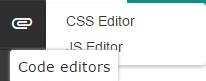Code editors include CSS and javascript editors. You can add any styles and javascripts in an editors. Your style will take precedence over any preset styles. Javascript code will only be executed in Preview mode, as it can cause conflicts with the interface scripts and service scripts code of this program.

Material design core framework

This BuilderX template is based on Material Design for Bootstrap is a theme for Bootstrap 3 which lets you use the new Google Material Design in your favorite front-end framework. Theme styles and scripts are integrated into the core of the program. You can use all the available classes to change the style of components. For more information, please see the following link Material Bootstrap theme you can use all the elements and features as well as change styles and compile their own LESS styles as described on this page Github page All elements and icons available in the template described in this page Bootstrap components
Material Theme LICENSE
The MIT License (MIT) Copyright (c) 2015, Federico Zivolo Permission is hereby granted, free of charge, to any person obtaining a copy of this software and associated documentation files (the "Software"), to deal in the Software without restriction, including without limitation the rights to use, copy, modify, merge, publish, distribute, sublicense, and/or sell copies of the Software, and to permit persons to whom the Software is furnished to do so, subject to the following conditions: The above copyright notice and this permission notice shall be included in all copies or substantial portions of the Software. THE SOFTWARE IS PROVIDED "AS IS", WITHOUT WARRANTY OF ANY KIND, EXPRESS OR IMPLIED, INCLUDING BUT NOT LIMITED TO THE WARRANTIES OF MERCHANTABILITY, FITNESS FOR A PARTICULAR PURPOSE AND NONINFRINGEMENT. IN NO EVENT SHALL THE AUTHORS OR COPYRIGHT HOLDERS BE LIABLE FOR ANY CLAIM, DAMAGES OR OTHER LIABILITY, WHETHER IN AN ACTION OF CONTRACT, TORT OR OTHERWISE, ARISING FROM, OUT OF OR IN CONNECTION WITH THE SOFTWARE OR THE USE OR OTHER DEALINGS IN THE SOFTWARE.
Contact form
Attention! Contact form requires a PHP hosting with enabled send_mail feature
Edit email properties
In order to receive emails, change email adrdress in the file in the line 6 myProjects/library/sendmail.php to your own email address

Installation Project files
Download the BuilderX template archive, Then unzip the file to any folder on your local disk. You will see the file structure of the project (Pic 1.1.) The Builder not particularly required for the setup, you only need Internet connection, because some of the files are installed on remote servers
Double-click on the file app.html, to run the application in a browser. We recommend the latest version of the Chrome browser
When you save a project file, select the folder /myProjects (Pic 1.2.) In this folder you will also find simple example templates created with this tool. When you save a project file on the local disk, specify any file name, for example, index.html Then, after saving the project, you can publish a project in web, to move the entire contents of this folder /myProjects to your hosting
Pic 1.1.
Pic 1.2.
Import templates
This program involves the use of specific templates. After loading proscale you see a welcome screen. You can create a template using predefined BuilderX from a template or import a preset. In the future, the number of ready-made templates and content BuilderX to be extended. Sign up for our newsletter to receive information about new templates and updates on a regular basis.
To import a template, click the Import button (Pic.1.1) (or on the left sidebar Menu File -> Import). Before the opening, you will see a modal window (Pic. 1.1.2.), which will be offered the options to import the template. If you want to add a block previously exported or template to your current template (this will include all the styles and scripts), turn (Append to the current document.) checkbox on active state. (Attention, if you do not check this check box, all the current styles and scripts will be completely replaced with styles and scripts of imported template.) Than Open the folder /templates, select a template, click Open.

To add new block - press on menu button with "plus" icon (Pic. 1.2.) to open modal window with BuilderX (Pic. 1.3.). Then grab one of the BuilderX and holding his release in the canvas in the right place. Then you can change the position of the block by dragging it up or down.